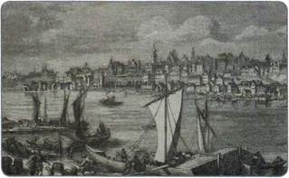
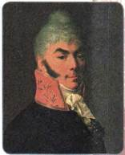
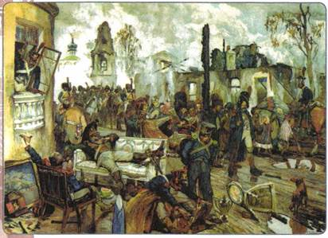

Почему внутренняя политика Александра I была противоречивой? Повлияла ли на это Отечественная война 1812 г.? Какое значение имели попытки либеральных реформ, предпринятые Александром I?
1. Влияние Отечественной войны 1812 г. на власть и общество
Победив общими усилиями Наполеона и изгнав захватнические войска, страна ждала перемен. Этими чувствами были охвачены все слои населения.
Часть дворянства, мыслящая либерально, мечтала и вслух говорила о будущей конституции. Крестьяне, отстоявшие Родину в борьбе с врагом, надеялись на улучшение своего положения. Многие народы Российской империи (в особенности поляки) ждали от царя приближения российских законов к западноевропейским, послаблений в национальной политике. С этими настроениями Александр I не мог не считаться.
Но он должен был учитывать и другое: консервативные слои дворянства восприняли победу над Наполеоном как очередное свидетельство превосходства российских порядков над западноевропейскими, они полагали, что какие-либо изменения не нужны и даже вредны. Восстановление старых правительств в Европе стало для них сигналом к повороту во внутренней политике. Нельзя было допускать и стремительных перемен, грозивших стране революционным хаосом.
С учётом этого Александр I, не отказываясь от идеи реформ, был вынужден вести их разработку в строжайшем секрете. Если о предложениях Негласного комитета и Сперанского постоянно говорили и в высшем обществе, и на улицах столиц, то новые проекты реформ готовились узким кругом лиц в обстановке полной тайны.
2. Продолжение реформ
Вспомните, когда Польша как самостоятельное государство прекратила своё существование.
После войны по решению Венского конгресса 1815 г. Россия получила часть польских земель, ранее находившихся во владении Пруссии. Так под властью Александра I оказались почти все территории бывшего польского государства. Они получили название Царство Польское. Польшей Александр I решил управлять по-особому, в 1815 г. даровав ей конституцию (подробнее суть этого документа рассмотрена на с. 45). Конституция закрепляла особый статус польских земель внутри Российской империи. Сохраняя подчинение Царства Польского российскому императору, она давала полякам широкие возможности для автономии и самоуправления. Александр I полагал, что этот «польский эксперимент» станет началом пути всей России к общей для неё конституции.

Варшава. Гравюра XIX в.
Великое княжество Финляндское, вошедшее в состав России в 1809 г., также стало управляться «по-новому»: оно получило широкую автономию в рамках империи.
Был проведён ряд реформ, коснувшихся положения крестьян в Прибалтике (подробнее о них см. с. 46). К реформам подталкивала также и сложная экономическая ситуация в стране: кризис, порождённый расходами на ведение войны и послевоенной разрухой городов и сёл.
3. Реформаторский проект Н. Н. Новосильцева
Николай Николаевич Новосильцев, талантливый дипломат и государственный деятель, пользовался особым доверием царя. В начале царствования Александра он входил в число членов Негласного комитета, с 1813 г. служил на различных постах в Царстве Польском. Именно ему Александр поручил разработку конституционного проекта.
В 1820 г. Новосильцев подготовил проект под названием «Уставная грамота Российской империи». Главным её пунктом было провозглашение суверенитета не народа (как было записано в большинстве конституций других стран), а императорской власти. В то же время в проекте провозглашалось создание двухпалатного парламента, без одобрения которого царь не мог издать ни одного закона. Правда, право внесения в парламент проектов законов принадлежало царю.
Он же возглавлял исполнительную власть. Предполагалось предоставить гражданам России свободу слова, вероисповедания, провозглашалось равенство всех перед законом, неприкосновенность личности, право на частную собственность.

Н. Н. Новосильцев
Как и в проектах Сперанского, в «Уставной грамоте...» под понятием «граждане» имелись в виду лишь представители «свободных сословий», в число которых не входили крепостные. О самом крепостном праве в проекте ничего не говорилось. «Уставная грамота...» предполагала федеративное устройство страны. Планировалось разделить страну на наместничества, в каждом из которых создать двухпалатные парламенты. Власть императора была по-прежнему огромна, но всё же ограничена. Вместе с грамотой были подготовлены и проекты манифестов, вводивших в действие основные положения «Уставной грамоты...», но подписаны они так и не были.
4. Отказ от проведения реформ в начале 1820-х гг.
Однако в то время как разрабатывались проекты реформ, Александр I стал замечать сопротивление реформам со стороны большинства дворян. По печальному опыту своего отца он понимал, чем это может ему грозить.
Одновременно во всей Европе нарастало революционное движение, которое влияло на российское общество, вызывало опасение царя за судьбу страны. Испытывая, с одной стороны, давление дворян, а с другой — страх перед народными выступлениями, Александр начал сворачивать свои реформаторские планы.
Более того, началось и попятное движение: издавались указы, вновь разрешившие помещикам ссылать крестьян в Сибирь за «предерзостные поступки», крепостным опять запретили подавать жалобы на своих господ; усилился надзор за содержанием газет, журналов, книг; чиновникам запретили без дозволения начальства издавать любые произведения, «касавшиеся внутренних и внешних отношений» Российского государства. В 1822 г., опасаясь влияния на российское общество революционных идей, император запретил деятельность в стране всех тайных организаций и начал преследование их участников.
Нерешённые проблемы общественной жизни накладывались и на личные переживания Александра I, потерявшего в короткий срок своих дочерей и сестру. В этом, как и в пожаре Москвы в 1812 г., и в страшном наводнении 1824 г. в Петербурге, царь видел Божью кару за мученическую смерть отца, Павла I.

Москва в сентябре 1812 г. Художник Д. Б. Кардовский
Какие последствия имело вступление в Москву французских войск в сентябре 1812 г.?
В 1820-е гг. император больше времени старался уделять не государственным делам, а религиозным вопросам. Он сосредоточился на вопросах веры. «Призывая к себе на помощь религию, — говорил Александр, — я приобрёл то спокойствие, тот мир душевный, который не променяю ни на какие блаженства здешнего мира».
В 1817 г. для усиления религиозных основ образования царь переименовал Министерство народного просвещения в Министерство духовных дел и народного просвещения. В учебных заведениях значительно увеличили количество часов, отводимых на религиозное обучение.
В интересах Русской православной церкви Александр I запретил деятельность ордена иезуитов, осуществлявшего пропаганду католицизма в стране. В 1820 г. иезуиты (несколько сотен человек) были высланы из России, имущество ордена конфисковано.
5. Итоги внутренней политики Александра I
Чем же можно объяснить такие перемены во внутренней политике царя? Почему так и не удалось провести в жизнь назревшие реформы? Одной из причин стала боязнь Александра разделить участь погибшего отца, который в своей политике не считался с интересами большинства дворян.
Важной причиной было и то, что царю-реформатору не на кого было опереться в реализации своих замыслов — не хватало умных, способных людей. Очень небольшим было и число последовательных сторонников реформ в обществе.
Другой важной причиной была противоречивость общего замысла преобразований — сочетать либеральные реформы с сохранением основ существующего строя: конституцию — с самодержавием, освобождение крестьян — с интересами большинства дворян.
Тот факт, что реформы разрабатывались секретно, облегчил отказ царя от уже готовых проектов. Немалую роль во всём этом играли и личные качества императора — неустойчивость его настроения, двуличие, проявившаяся с годами склонность к мистицизму.
ПОДВЕДЁМ ИТОГИ
Несмотря на то что многие реформаторские начинания так и не были воплощены в жизнь, внутренняя политика Александра I, проекты разработанных по его поручению преобразований готовили почву для масштабного экономического и политического реформирования России в будущем.
Вопросы и задания для работы с текстом параграфа
1. Какое влияние оказала Отечественная война 1812 г. на власть и общество?
2. Почему дарование Александром I конституции Царству Польскому называют самой либеральной мерой из всех предпринятых императором? 3. В чём Александр I видел практический смысл «польского эксперимента» для всей России? 4. Каковы были главные причины отказа от проведения реформ с начала 1820-х гг.? 5. Дайте общую оценку внутренней политики Александра I в период 1815—1825 гг.
1. В чём проявлялись колебания императора Александра I во внутренней политике? Какими причинами они были вызваны? 2. Проанализируйте внутреннюю политику Александра I на протяжении всего периода его правления в 1801—1825 гг. Что можно отнести к либеральным, а что — к консервативным тенденциям? 3. Сравните проекты Н. Н. Новосильцева и М. М. Сперанского. Есть ли у них общие идеи? Составьте сравнительную таблицу (в тетради). 4. Какими идеями руководствовался Александр I при подготовке польской конституции? Какое значение для развития польской государственности имело дарование конституции Александром I?